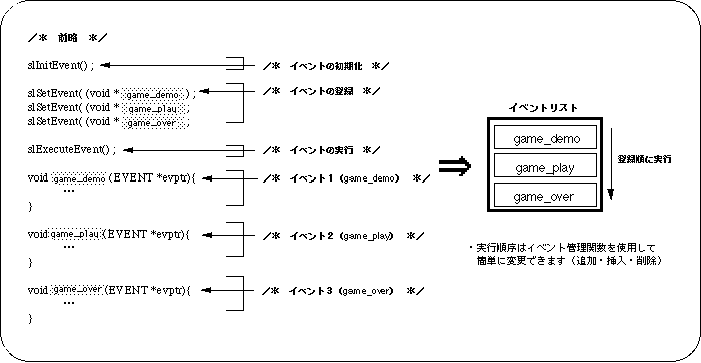
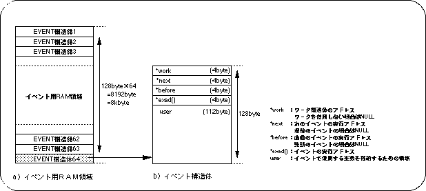
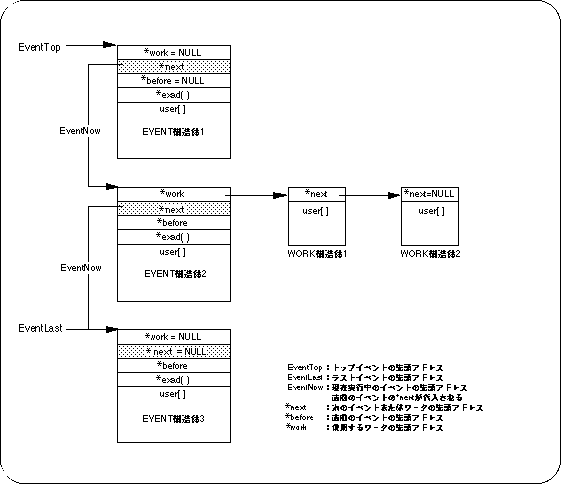

Return to previous page | Return to menu ｜ Go to next page
This chapter explains the specific use of the event structure and event management functions.
By using the concept of events, it is possible to describe a program as a combination of program events (one element in a program), which makes it very easy to understand the overall program flow.
In addition, since each program event can be used in common, the program can be simplified.
Event processing refers to processing in which a group of functions appearing in a program list is represented by a label called an event, and a continuous list of events is executed in order from the top.
By using event processing, it is possible to process complicated functions that are executed continuously as a simple list of labels. Also, the execution order can be easily changed as an operation of the label registered as an event.
As a result, the overall program flow can be grasped, and common use of events and simplification of the program can be achieved.

The functions registered as events and the execution order of events are processed in the event management area called the EVENT structure reserved in the event RAM area.
In SGL, the event execution order is called an event list.
An event is defined as an EVENT structure in the event RAM area (8 kbytes). One EVENT structure consists of 128 bytes, and up to 64 EVENT structures can be defined in this RAM area. The EVENT structure is configured as shown in Figure 10-2.

Each EVENT structure consists of the following members.
* work: Start address of WORK structure for user area expansion. * next: The start address of the next event to be executed. * before: The start address of the event executed immediately before. * exad (): Start address of the area where the function to be executed as an event is stored. user []: User area for storing variables used by event registered functions. It is also possible to expand the user area using workpieces.
If each member of “* work”, “* next”, “* before” does not have the corresponding address, NULL is assigned.
When the user uses the user area in the EVENT structure, it is very convenient to cast the user area with a structure defined for the user.
The user area of one EVENT structure consists of 112 bytes, but if you want to use the user area beyond this, it is possible to extend the user area using a work or the like. For details on expansion of the user area, refer to “10-4: Expansion of user area”.
Each event defined as an EVENT structure in the event RAM area constitutes a list according to the order of events to be executed.
A list is a series of events that are linked by “* next” and “* before” reserved in the event structure, and are called an event list.
In addition, events that are continuously executed in the event list do not necessarily need to be continuously stored in the event RAM area, and if the pointers are concatenated with “* next” and “* before”, It is executed continuously.

Note) NULL (0) if the corresponding event work does not exist
The system uses the top address of the EVENT structure registered at the top of the event list as the EventTop variable. When executing an event, the event is executed in order from the event specified by “EventTop”.
The executed event passes the value of the pointer “* next” in the EVENT structure to the EventNow variable, and the system then executes the EVENT structure starting from the address pointed to by “EventNow”. The system executes events in order according to “EventNow”, and ends event execution processing when the value pointed to by “* next” becomes NULL (there is no event to follow).
The EventLast variable points to the start address of the EVENT structure registered at the end of the list, and is used when adding or registering events. The EventLast variable is changed only when executing “slSetEvent”, “slSetEventNext”, and “slCloseEvent” in the library functions.
“* Before” is used when inserting / registering / deleting events.